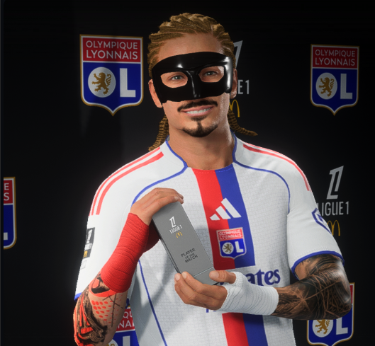
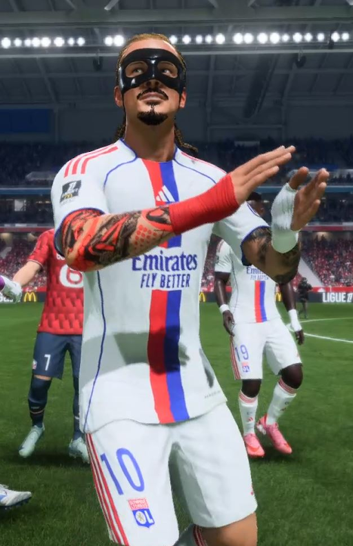
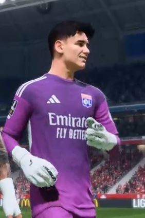
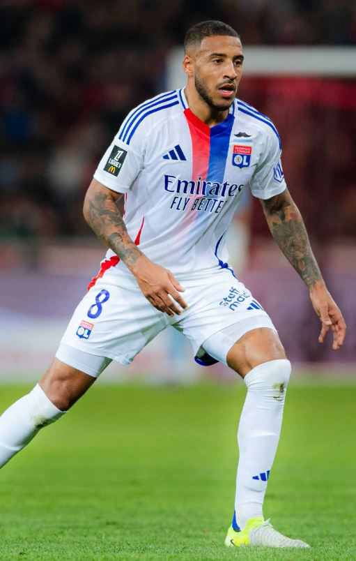
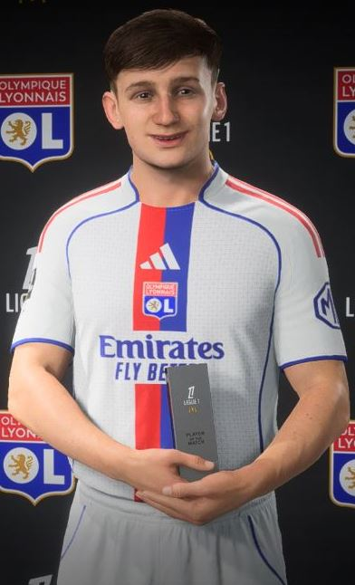
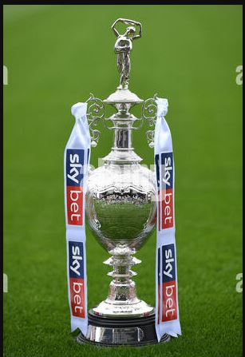

Hat-trick na estreia pelo Lyon!
Gozadinho marca 4 gols em sua estréia pelo Lyon e afasta criticas sobre contratação duvidosa.

Penislongo assina com Lyon
Penislongo depois de uma temporada avassaladora pelo Sheffield United assina com o Lyon e agradece a ambos os times pelas oportunidades

Gol do titulo na carabao cup
No jogo contra o Manchester United valido pela final da Carabao Cup Penislongo crava e garante o campeonato para o Sheffield United.

Penislongo bate recorde em sua primeira temporada como profissional
com 45 gols na EFL championship Penislongo bate o recorde de maior quantidade de gols em uma única temporada da competição

Ex-Sheffield, Penislongo relembra início
Atacante agradece clube inglês pela formação e relembra o gol mais bonito da carreira até o momento.
⚽ 4 gols pela estréia no Lyon ⚽
Elenco do Olympique Lyonnais

Penislongo
Ponta Esquerda (PE)

descamps
Goleiro (GL)

Corentin Tolisso
Meio-campo (MC)

T.Morton
Volante (VL)
Troféus de Penislongo

EFL Championship
Campeão com Sheffield United
Bateu recorde da liga com mais gols em uma temporada

Carabao Cup
Gol do título na final
Decisivo em todos os jogos, terminando a competição com 8 gols